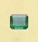
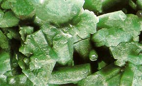
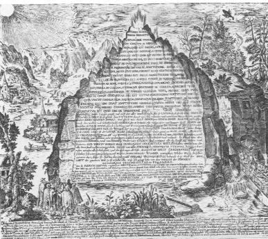

La Table d'Emeraude
Revu le 6 janvier 2002
Plan : Introduction - 1) la Nature - 2) l'Esprit universel -3) la Tabula Smaragdana selon : L. Gérardin - J. Sadoul - J. van Lennep - F. Hoefer - Fulcanelli - 4) Texte de la Table - 5) Notes sur la Table - 6) - Commentaire d'Hortulain - 7) - Notes sur le Commentaire -
IntroductionLa Table d'Emeraude - Tabula Smaragdina - est l'un des textes fondateurs de l'alchimie. Cela ne signifie pas, tant s'en faut, que ce soit le plus ancien et de curieuses légendes circulent autour de ce texte. Pourtant, les alchimistes ont cru reconnaître dans ces quelques phrases l'Oeuvre entier de la Nature [entendez, non pas le moyen de préparer la pierre philosophale, mais le moyen de capter l'Esprit universel]. Cela doit nous amener à donner une définition de la Nature telle qu'elle pouvait être comprise, vers le VIe siècle après J.-C. qui correspond en toute hypothèse à l'époque où la Table d'Emeraude fut rédigée. Nous emprunterons cette définition de la Nature à Dom Pernety.
Nature. L'œil de Dieu. Dieu même, toujours attentif à son ouvrage, est proprement la Nature même, et les lois qu'il a posées pour sa conservation, sont les causes de tout ce qui s'opère dans l'Univers. A ce premier moteur ou principe de génération et d'altération, les anciens Philosophes en joignaient un second corporifié, auquel ils donnaient le nom de Nature; mais c'était une nature secondaire, un serviteur fidèle qui obéit exactement aux ordres de son maître, ou un instrument conduit par la main du souverain Ouvrier, incapable de se tromper. Cette nature ou cause seconde est un esprit universel, vivifiant et fécondant, la lumière créée dans le commencement, et communiquée à toutes les parties du macrocosme. Les Anciens l'ont appelé un esprit igné, un feu invisible, et l'âme du monde.
L'ordre qui règne dans l'Univers n'est qu'une suite développée des lois éternelles. Tous les mouvements des différentes parties de la masse en dépendent. La Nature forme, altère et corrompt sans cesse, et son modérateur présent partout répare continuellement les altérations de son ouvrage.Le terme de Nature s'entend aussi de la partie de l'Univers que compose le globe terrestre, et tout ce qui lui appartient. Dans ce dernier sens la Nature, selon tous les Physiciens et les Chymistes, est divisée en trois parties, qu'ils appellent règnes; savoir, le règne animal, le végétal, et le minéral. Tous les individus de ce monde sublunaire sont compris dans cette division, et il n'en est aucun qui n'appartienne à un de ces trois règnes. Tous trois partent du même principe, et néanmoins sont composés de trois substances différentes, qui en sont les semences; savoir, le menstrue pour les animaux, l'eau de pluie pour les végétaux, et l'eau mercurielle pour les minéraux. Chaque règne est encore composé d'un assemblage de trois substances, analogues en quelque manière avec celles des autres règnes; c'est-à-dire, d'une substance subtile, ténue, spiritueuse et mercurielle, d'une substance grossière, terrestre et crasse, et d'une troisième moyenne, et qui participe des deux. Il n'est point de corps d'où l'Art ne vienne à bout de séparer ces trois espèces de principes. Outre ces trois substances, on en remarque comme une quatrième, qui peut se rapporter à la première par sa ténuité et sa subtilité; mais qui semble en différer, en ce qu'il est comme impossible à l'Art de la réduire en esprit liquoreux, au lieu que l'autre se condense en eau, tel que l'esprit de vin et les autres liqueurs subtiles, auxquelles l'on donne le nom d'Esprit. Cette matière incondensable, est celle que J. B. Van-Helmont appelle Gaz. C'est celle qui se fait sentir, qui s'évapore dès le commencement de la fermentation des corps. Beccher dit n'avoir pu réussir à condenser ce gaz, qui s'évapore du vin lorsqu'il fermente dans les tonneaux.
Dans ces trois classes d'individus, la semence est différente, et selon le même Auteur, contraire l'une à l'autre à certains égards ; quoiqu'elles aient beaucoup d'affinité entre elles, comme sorties d'un même principe, l'une ne peut devenir semence d'un règne différent du sien : de manière que le Créateur ayant une fois séparé ces trois substances du même principe, elles ne sont plus transmuables l'une dans l'autre. Ceux qui scrutent la Nature, y trouvent un caractère trine, qui semble porter l'empreinte du sceau de la Trinité. Les Théologiens verront dans ce caractère des mystères et des choses si surprenantes, qui se font toutes par trois, qu'elles sont bien capables d'affermir notre foi. Les Physiciens habiles et judicieux voient que ce nombre trinaire des trois règnes est bien digne de toute leur attention. L'âge d'un homme, quelque prolongé qu'il soit, n'est pas suffisant pour observer les opérations étonnantes et admirables qui se passent dans les laboratoires de ces trois règnes. Y a-t-il rien de plus incompréhensible que ce qui se passe dans le ténébreux séjour où se conçoit et s'engendre l'homme, d'une substance si vile, si corruptible, d'une manière si simple et si commune, en peu de mois, composé cependant d'une infinité de veines, de nerfs, de membranes, de valvules, de vases, et d'autres organes, dont le moindre ne saurait être imité parfaitement par le plus habile Artiste de l'Univers ? Quoi de plus admirable, que de voir dans une nuit, par une même pluie, dans une même terre, tant de différons végétaux, si divers en couleurs, en odeur, en saveur, en figure, germer et croître et en si grande quantité, qu'il n'est homme au monde qui les ait seulement tous vus, loin d'en avoir connu les propriétés ! Les fossiles n'ont rien de moins admirable, et nous ne sommes pas plus en état d'en expliquer parfaitement la génération, que celle des deux autres règnes.
Nous en savons beaucoup, nous en ignorons encore peut-être davantage; mais ce qui nous est connu suffit certainement pour nous faire écrier avec le Roi Prophète : Que vos ouvrages. Seigneur, sont magnifiques ! Vous avez. fait tout avec une grande sagesse.Ces trois règnes ont encore une différence dans leur manière d'être, qui les distingue l'un de l'autre. Les animaux ont un corps, dont les parties ne semblent former qu'un assemblage fait par union; les végétaux par coagulation, et les minéraux par fixation. Ces derniers ne se trouvent que dans les entrailles de la terre, et moitié hors de la terre; les animaux sont tous hors de terre, ou en sont totalement séparés. L'étude de la Nature porte avec elle tant d'agréments, tant de plaisir et tant d'utilité, qu'il est surprenant de voir si peu de gens s'y appliquer.
Quelques Anciens réduisaient tout en combinaison, et admettaient les nombres comme forme de tout ce qui existe, ou comme la loi, suivant laquelle tout se forme dans la Nature. Tycho Brahé a recueilli ses réflexions là-dessus dans une carte extrêmement rare aujourd'hui, à laquelle il a donné pour titre : Calendarium naturaîe magicum perpetuum, profundissimant rerum secretissimarum contemplationem, totiusque Philosophiœ cogni-tionem complectens. Il y parle de presque toute la Nature qu'il range sous les nombres depuis l'unité jusqu'à douze. Comme la plupart des Lecteurs seront bien aise d'en avoir quelque idée, voici en substance ce qu'elle contient. Tout est combiné et composé dans la Nature, selon certaines mesures invariables formées, pour ainsi dire, sur des nombres qui semblent naître les uns des autres. Il y a plusieurs choses uniques dans le monde qui nous représentent l'unité. Un Dieu principe et fin de toutes choses, et qui n'a point de commencement, de même que dans les nombres rien ne précède l'unité. Il n'aura aussi point de fin, comme l'unité peut s'ajouter à l'unité par une progression infinie.Il n'y a qu'un Soleil d'où semble procéder la lumière qu'il communique à tout l'Univers, après l'avoir reçue. II n'y a qu'un macrocosme et une âme de l'Univers. Dans le monde intelligible et matériel une seule pierre des Sages, et dans le microcosme un cœur, source de la vie, d'où la lumière vitale se communique à toutes les autres parties du corps.
L'unité est donc la source de l'amitié, de la concorde et de l'union des choses, comme elle est le principe de leur extension; parce qu'une unité répétée produit deux. Ce nombre deux est le principe de la génération des choses, composées de deux; savoir, de la forme et de la matière, du mâle et de la femelle, de l'agent et du patient; c'est pourquoi ce nombre est celui du mariage et du microcosme, et signifie la matière procréée. La forme, le mâle et l'agent sont la même chose. Le soleil, la terre, le cœur, la forme, et ce que les Astrologues appellent Tête de Dragon, sont regardés comme mâle. La lune, l'eau, le cerveau, la matière et la queue du dragon sont la femelle; les premiers représentés par Adam, les seconds par Eve. Aussi Dieu n'a-t-il créé qu'un mâle et une femelle; et rien dans l'Univers ne s'engendre sans le concours de l'un avec l'autre. Ce qui nous est représenté par les deux Chérubins qui couvraient l'arche de leurs ailes, et par les deux tables de la loi données à Moïse, qui y étaient renfermées.
L'unité ajoutée au nombre deux fait trois, nombre sacré, très puissant et parfait; et la seconde division de la Nature et de son principe Dieu en trois personnes, Père, Fils, et Saint-Esprit. Le Fils est engendré du Père, et le Saint-Esprit procède des deux. Aussi le Créateur semble avoir voulu se manifester à nous dans tout le livre de la Nature; comme il en était le commencement, il semble avoir formé l'homme de toute quintessence des choses, pour être le spectateur de l'Univers, et y reconnaître son Auteur. Tout aussi dans la Nature est composé de trois et divisé par trois : trois personnes en Dieu, trois hiérarchies des Anges, la suprême, la moyenne et la basse, qui multipliée par elle-même forme neuf, dont nous parlerons ci-après. Il y a trois sortes d'âmes dans l'Univers : l'intelligente, la sensitive et la végétative. Ces trois âmes se trouvent dans l'homme, la sensitive et la végétative dans les animaux, et la végétative seule dans les plantes.Il y a eu trois sortes de temps écoulés ou qui s'écoulent depuis la création : le temps de la Nature, appelé la loi de la Nature; le temps de la loi, ou la loi de Moise, et le temps de la grâce, ou la loi de grâce.
Trois vertus Théologales : la foi, l'espérance et la charité.
Trois puissances intellectives dans le microcosme : la mémoire, l'esprit et la volonté. Trois règnes dans la Nature : le minéral, le végétal et l'animal, dans lequel l'homme ne doit point être compris en particulier, parce qu'il est composé de la quintessence des trois.
Trois sortes d'éléments : les purs, les composés et les décomposés.
Trois principes matériels de tous les mixtes : soufre, sel et mercure.
Trois qualités de ces principes : le volatil, le fixe, et un troisième qui participe des deux.
Trois divisions de la journée selon la création : le jour, la nuit et le crépuscule.
Trois mesures des choses : le commencement, le milieu et la fin.
Trois mesures du temps : le passé, le présent et le futur.
Trois dimensions dans les corps : la longueur, la largeur, et la hauteur.
Trois principes de l'homme : l'âme, l'esprit et le corps.
Trois parties dans le corps du microcosme, correspondant à autant de parties du macrocosme : la tête, la poitrine et le ventre. La tête au ciel, la poitrine au firmament ou à l'air, le ventre à la terre.
Trois éléments principaux : le feu, l'air et l'eau.Un esprit un peu éclairé et instruit de la Nature, verra sans peine que toutes ces choses divisées en trois ne font cependant qu'une et même chose; comme les trois personnes ne font qu'un Dieu. Le temps passé, le présent et le futur ne font qu'un et même temps ; la hauteur, la largeur et la longueur d'un corps, ne font qu'un corps. L'âme, l'esprit et le corps ne composent qu'un homme; toutes ces choses sont néanmoins très distinctes entre elles, et nous en concevons la différence, aussi bien que la réunion pour en faire l'unité; pourquoi douterait-on de l'existence d'un Dieu en trois personnes ? Une unité ajoutée à trois produit quatre, qui devient, selon Tycho Brahé et plusieurs autres, le fondement de tous les nombres, la fontaine de nature, comme renfermant le nombre parfait dont tout a été créé. C'est pourquoi l'on partage l'Univers en quatre éléments, le feu, l'air, l'eau et la terre, aux trois premiers desquels répondent deux planètes à chacun; savoir, le Soleil et Mars au feu, Jupiter et Vénus à l'air, Saturne et Mercure à l'eau; et la Terre a en partage le Soleil, la Lune et les Etoiles fixes.
On compte aussi quatre points cardinaux dans le monde : l'Orient, l'Occident, le Midi et le Septentrion.
Quatre vents : Eurus, Zéphyrus, Aquilo et Auster.
Quatre qualités des éléments : la lumière du feu, le diaphane de l'air, la mobilité de l'eau, et la solidité de la terre.
Quatre principes de l'homme correspondants aux quatre éléments : l'âme au feu, l'esprit à l'air, l'âme animale à l'eau, et le corps à la terre.
Quatre humeurs principales dans le corps du petit monde : la bile, le sang, la pituite et la mélancolie.
Quatre facultés de son âme : l'intellect, la raison, l'imagination et le sentiment.
Quatre degrés progressifs : être, vivre, apprendre et comprendre.
Quatre mouvements dans la Nature : l'ascendant, ou du centre à la circonférence; le descendant, ou de la circonférence au centre; le progressif ou horizontal, et le circulaire.
Quatre termes de la Nature : la substance, la qualité, la quantité et le mouvement.
Quatre termes mathématiques : le point, la ligne, la superficie, et la profondeur ou la masse.
Quatre termes physiques : la vertu séminative ou semence des corps; leur génération; leur accroissement et leur perfection.
Quatre termes métaphysiques : l'être ou l'existence; l'essence; la vertu ou le pouvoir d'agir, et l'action.
Quatre vertus morales : la prudence, la justice, la tempérance et la force.
Quatre complexions ou tempéraments : la vivacité, la gaieté, la nonchalance et la lenteur.
Quatre saisons : l'hiver, le printemps, l'été et l'automne.
Quatre Evangélistes : S. Marc, S. Jean, S. Matthieu et S. Luc.
Quatre animaux sacrés : le lion, l'aigle, l'homme et le bœuf.
Quatre sortes de mixtes : les animaux, les plantes, les métaux et les pierres.
Quatre sortes d'animaux : ceux qui marchent; ceux qui volent; ceux qui nagent, et ceux qui rampent.
Quatre qualités physiques des corps : chaud, humide, froid et sec. Correspondances des métaux aux éléments : l'or et le fer au feu; le cuivre et l'étain à l'air; l'argent vif à l'eau; le plomb et l'argent à la terre.
Quatre sortes de pierres qui leur répondent : les pierres précieuses et éclatantes, comme le diamant, le rubis, etc.; les pierres légères et transparentes, comme le talc; les pierres dures et claires, comme le caillou; les pierres opaques et pesantes, comme le marbre, etc.
Des douze signes, trois répondent à chaque élément : le Bélier, le Lion et le Sagittaire au feu; les Gémeaux, la Balance et le Verseau à l'air; le Cancer, le Scorpion et les Poissons à l'eau; le Taureau, la Vierge et le Capricorne à la terre.Le nombre cinq est consacré à Mercure, dit Tycho Brahé, et n'est pas moins mystérieux que ceux qui le précèdent. On y voit l'eau, l'air, le feu et la terre dont est composé tout mixte qui fait un cinquième tout abrégé des quatre.
Cinq sens : la vue, l'ouïe, l'odorat, le goût et le toucher.
Cinq genres de mixtes : les pierres, les métaux, les plantes, les zoophytes et les animaux.
Cinq sortes d'animaux : les hommes, les quadrupèdes, les reptiles, les poissons et les oiseaux.
Cinq extrémités communes aux animaux mâles et femelles : la tête, les deux bras et les deux pieds.
Cinq doigts à chaque pied et à chaque main de l'homme.
Cinq parties principales dans l'intérieur du corps : le cœur, le cerveau, le poumon, le foie et la rate.
Cinq parties dans les plantes : la racine, la tige, les feuilles, la fleur et la semence.La Nature a comme reçu sa dernière perfection par le nombre six; car le monde a été achevé le sixième jour de la création, et ce jour-là Dieu regarda tout ce qu'il avait fait, et tout était parfaitement bon.
Il y a six cercles imaginés dans le ciel : l'artique, l'antarctique, les deux tropiques, l'équinoxial et l'écliptique.
Six planètes errantes : Saturne, Jupiter, Mars, Vénus, Mercure et la Lune.
Il y a six manières d'êtres ou modes des corps : la grandeur, la couleur, la figure, la position relative, le repos et le mouvement.
Le cube a six faces.
Six degrés de l'homme : l'entendement, la mémoire, le sentiment, le mouvement, la vie et l'animalité.
Six parties principales extérieures dans la tête de l'homme et des autres animaux : deux yeux, deux oreilles, le nez et la bouche.Mais la Nature semble se plaire au nombre sept plus qu'en tout autre, et les Pythagoriciens qui le regardaient comme le nombre le plus mystérieux, l'appelaient en conséquence la voiture de la vie humaine. La vertu de ce nombre, disaient-ils, se manifeste dans toutes les générations de la Nature, et sert particulièrement pour la génération de la nature humaine. Elle sert à le composer, à le faire concevoir, à le former, à l'enfanter, à le nourrir et à le faire vivre. Aristote dit qu'il y a sept cellules dans la matrice; si la semence y demeure sept heures, la conception se fait; les premiers sept jours, elle devient propre à recevoir la figure humaine; l'enfant est parfait, naît et vit quand il vient au monde à sept mois; après sept jours il jette le superflu de son nombril; après deux fois sept jours ses yeux se tournent du côté de la lumière; c'est pourquoi les nourrices doivent avoir grand soin de placer toujours l'enfant de manière qu'il puisse voir la lumière directement, ce défaut d'attention fait beaucoup d'enfants louches; après sept mois les dents commencent à lui pousser; après le troisième septénaire il commence à parler; à sept ans les dents lui tombent; au second septénaire d'années il commence à avoir la faculté générative; au troisième septénaire il se fortifie, et prend à peu près tout son accroissement; au quatrième il est homme parfait; au septième il commence à décliner, et la septième dizaine est ordinairement à peu près le terme de sa vie, comme le dit le Roi David.
La plus haute taille de l'homme est communément de sept pieds.
Dans le grand monde il y a sept planètes, sept pléiades, sept jours de la semaine. A chaque sept jours la Lune change de quartier.
Le flux et reflux de mer est plus sensible le septième jour de la Lune, et à chaque septénaire. On ne finirait pas si l'on voulait rapporter ici tout ce qui se fait par sept dans la Nature. On peut voir dans l'Ecriture Sainte combien ce nombre de sept était mystérieux. Tout semblait y aller par sept : les prières, les fêtes, les purifications, etc.; sept vaches maigres et sept grasses, sept épis de bled, sept plaies de l'Egypte, sept ans de famine; Naaman lavé sept fois dans le Jourdain; David loue sept fois Dieu dans la journée; sept dons du Saint-Esprit, etc. Le reste de la Carte de Tycho Brahé regarde plus particulièrement les planètes et les
signes du Zodiaque, avec leurs vertus et propriétés cabalistiques; c'est pourquoi je le passe sous silence.NATURE FUYANTE . Matière volatile qui n'est point permanente au feu, tel qu'est le mercure commun. Il faut se donner de garde de toutes ces matières métalliques de nature fuyante, parce qu'elles ne sont point propres au magistère.
Les Philosophes recommandent partout de ne faire entrer dans la composition de la pierre que des choses de même nature; parce que nature s'éjouit en sa propre nature, nature amende nature, nature perfectionne nature, nature contient nature, et nature est contenue par nature, comme le dit Parmenides dans le Code de Vérité. La raison de cela est que les principes de la matière du magistère sont les mêmes que ceux des métaux, et que n'étant pas encore animés de l'âme proprement métallique, ils ont cependant la faculté de se réunir ensemble dans le mélange qu'on en fait. Qu'on ne s'imagine donc pas réussir à faire l'œuvre, en prenant, pour matière du magistère, des plantes, ou des sels des végétaux, des cheveux, du sang humain, de l'urine, ou toute autre chose prise de l'homme ou des animaux, le nitre, le vitriol, les attramens, le sel commun ou tout autre sel; antimoine, bismuth, zinc, orpiment, arsenic, soufre, et quelque espèce que ce puisse être des minéraux, excepté un seul, dit Philalèthe, qui est leur premier être.
Il ne faut donc point prendre à cet effet le mercure vulgaire, ni les mercures extraits des métaux, ni les métaux seuls, quoi qu'ils soient tous de même nature. Les Souffleurs doivent faire attention que Morien les avertit, que tout ce qui s'achète cher est inutile, et ne vaut rien pour l'œuvre; que si l'on ne trouve pas la matière du magistère vile, méprisée, jetée, même quelquefois sur les fumiers, et foulée aux pieds dans les endroits où elle est, en vain mettra-t-on la main à la bourse pour l'acquérir, puisqu'on peut l'amasser soi-même sur les montagnes, dans les plaines, et dans tous les pays; qu'elle ne coûte rien que la peine de la chercher et de la ramasser; que la bénigne Nature la forme toute disposée à l'œuvre, et que l'ingénieux Artiste n'a qu'à aider la Nature, pour qu'elle lui donne cette eau céleste et divine, ce mercure des Sages si recherché de tant de gens, et trouvé de si peu de personnes. Que le studieux amateur de la Science Hermétique se grave bien profondément dans l'esprit qu'il doit imiter la Nature; se servir des mêmes principes et des mêmes voies, pour parvenir au même but, qu'elle n'emploie pas des animaux pour faire une plante, mais la semence de cette même plante, ou une plante pour faire un métal, ni du métal pour faire un animal; mais les semences de chaque chose pour faire chaque chose. Qu'il apprenne à connaître la Nature, et ne se trompe pas en prenant pour végétal ce qui est minéral, ou pour minéral ce qui est animal. Pour avoir cette connaissance, c'est à Dieu ou à un Philosophe qu'il faut recourir. Il faut prier avec instance et droiture de cœur, avec humilité et persévérance; et Dieu si bon, si miséricordieux refusera-t-il à l'homme, qui est son image, ce principe de santé et de richesses, lui qui accorde la nourriture aux petits des corbeaux qui l'invoquent ?Lorsque les Philosophes disent qu'il faut changer les natures, ce n'est pas de faire passer les mixtes d'un règne dans la nature d'un autre règne, comme serait un végétal dans la nature métallique; mais de spiritualiser les corps; et corporifier les esprits, c'est-à-dire, fixer le volatil, et volatiliser le fixe : ce qu'ils appellent aussi mettre le dessous dessus, et le dessus dessous; réduire la terre en eau, et l'eau en terre.
Nature se joint par nature; nature contient nature; nature s'éjouit en nature; nature amende nature; nature aime nature; nature surmonte nature; nature retient nature, sont des façons de parler des Philosophes, pour signifier que le dissolvant philosophique doit être de même nature que le corps qui doit être dissous, que l'un perfectionne l'autre dans le cours des opérations, et l'union des deux se fait d'abord par la putréfaction, et ensuite par la fixation. Le mercure dissout le fixe qui est de même nature, puisqu'il en a été fait; le soufre ou le fixe, fixe ensuite le mercure, et en fait la poudre de projection. C'est pourquoi les Chymistes Hermétiques disent que les natures diverses ne s'amendent point; c'est-à-dire, ne sont pas capables de se perfectionner, parce qu'elles ne peuvent s'unir parfaitement. Ainsi les sucs de la plante appelée lunaire, ni quelqu'autre suc de plante que ce puisse être, ne valent rien pour l'œuvre métallique. Le mercure prétendu fixé par leur moyen,
est une supercherie toute pure.[Dictionnaire mytho-hermétique]
Nous n'en dirons pas plus sur le sujet, que Pernety semble avoir épuisé. Cet article Nature se suffit à lui-même et consisterait déjà en une introduction suffisante à la Table d'Emeraude. Nous dirons à présent quelques mots de l'Esprit universel. Voyons d'abord l'article du Dictionnaire mytho-hermétique :

"ESPRIT UNIVERSEL. C’est proprement le nitre répandu dans l’air, imprégné de la vertu des astres, et qui, animé par le feu de la Nature, fait sentir son action dans tous les êtres sublunaires. Il est leur aliment, il leur donne la vie, et les entretient dans cet état autant de temps que son action n’est point empêchée par le défaut des organes, ou par la désunion des parties qui les composent." [Dictionnaire]
On ne saurait mieux désigner, d'une certaine manière, l'Esprit universel dans son rapport à l'alchimie. D'autres l'ont assimilé - dans sa correspondance chimique - à l'acide vitriolique ou à l'acide carbonique. Voyez ce que nous en disons à la section salpêtre. On l'a aussi désigné comme l'Esprit du Monde et Clovis Hesteau de Nuysement lui a consacré un ouvrage intitulé Traité de l'Harmonie et constitution générale du Vrai Sel secret des Philosophes [Perier et Audias, Paris, 1721]. Dans son rapport à l'univers, l'Esprit universel, d'après Newton, correspond au « sensorium Dei », à l'instar d'une toile d'araignée. De quelque côté qu'il y ait la plus légère vibration sur la toile, l'araignée en est avertie et localise immédiatement l'endroit d'où émane cette vibration. En terme moderne, on peut dire que le sensorium Dei correspond à l'espace-temps plus ou moins incurvé selon la masse gravitationnelle présente en un endroit donné du cosmos. Mais les intellectuels du Moyen Âge et de la Renaissance ne pouvaient bien sûr pas avoir de l'Esprit universel une telle représentation. Pour eux, l'esprit universel procédait de la Nature et représentait un esprit volatil qui faisait son office dans les corps, sous l'impulsion de l'Archée, aidé en cela de l'Iliaste. Cet Esprit représentait le souffle divin, le feu central et universel. Et dans la Terre, cet Esprit était représenté par une vapeur, formant le chaos primordial dans lequel se trouvait tout ce qui était nécessaire à la création. L'alchimie s'est appropriée cet Esprit, elle qui prétendait à la fois enrichir ses Adeptes en leur apprenant à fabriquer l'or et l'argent, les mettre à l'abri des maladies par la préparation de la panacée, enfin leur procurer le bonheur parfait en les identifiant avec l'âme du monde. Pour les alchimistes, l'Esprit universel représentait un sel parfait, que les Philosophes chymiques appelaient « l'eau qui ne mouille point les mains » et qui permettait de résoudre les métaux en leur première forme, c'est-à-dire en leur humide radical métallique. La captation de cet Esprit universel devait passer par une médiation et les alchimistes croyaient tenir, avec la rosée de mai, le médiateur suprême entre la Terre et le Ciel, le véritable réceptacle des influences des sept planètes et des étoiles fixes. Les chimistes du XVIIIe siècle regardaient l'acide vitriolique comme l'Esprit universel :
"On imbibe des linges d'une forte lessive d'alkali fixe [carbonate de potasse ou borith des Anciens], et on les expose ainsi humectés à l'air libre, par exemple dans un grenier. A la suite du temps, ces linges se recouvrent d'une efflorescence saline, qui étant dissoute dans l'eau, forme par évaporation de véritables cristaux de tartre vitriolé : preuve certaine que l'acide vitriolique est répandu dans l'atmosphère, et qu'il y est toujours prêt à former des combinaisons avec les corps qu'il rencontre, pourvu qu'ils soient de nature à s'unir aisément avec lui. C'est par cette raison que les chimistes modernes [XVIIIe siècle] regardent l'acide vitriolique comme l'esprit universel, et qu'ils pensent que tous les autres acides font autant de déguisements de cet acide primitif."
On peut citer aussi ce critique du Cours de chymie de Lemery, quand il évoque le nitre :
"On est convaincu aujourd'hui par expérience que le nitre est un sel parfaitement neutre qui ne fait point d'effervescence, ni avec les alkalis, ni avec les acides...L'épithète de sel aérien pourroit mieux convenir au salpêtre ; car suivant la théorie de Sthal, la production de ce sel dépend de ce que l'esprit universel répandu dans l'atmosphère, & qui est de la nature de l'acide vitriolique, venant à se déposer dans les pierres ou des terres qui sont chargées de matières, soit animales, soit végétales, réduites en pourriture, il se combine avec les sels volatils & les huiles fétides que la putréfaction développe dans ces sortes de matières..."
Ainsi est-il possible d'assimiler le salpêtre à la rosée de mai des vieux auteurs par ce principe de « captation » de « l'esprit universel » tel qu'on le comprenait encore à l'époque de N. Lémery. C'est sans doute aussi ce que pense Fulcanelli, quand, à mots couverts, il assure que :
"C’est pourquoi les Sages, sachant que le sang minéral dont ils avaient besoin pour animer le corps fixe et inerte de l’or n’était qu’une condensation de l’Esprit universel, âme de toute chose ; que cette condensation sous la forme humide, capable de pénétrer et rendre végétatifs les mixtes sublunaires, ne s’accomplissait que la nuit, à la faveur des ténèbres, du ciel pur et de l’air calme...les Sages, pour ces raisons combinées, lui donnèrent le nom de rosée de Mai ". [Myst. Cath., p. 138]
Arcana nox...Plus loin, Fulcanelli continue en affirmant que :
"Sans entrer par le menu dans la technique opératoire, -ce qu'aucun Auteur n'a osé faire, - nous dirons cependant que l'Esprit universel, corporifié dans les minéraux sous le nom alchimique de Soufre, constitue le principe et l'agent efficace de toutes les teintures métalliques". [Mys. Cath., p.138]
Qu'entend-il exactement par agent ? Est-ce cette substance qui, d'abord à l'état de premier Mercure [Mercure commun], deviendra le véritable dissolvant [Mercure animé ou philosophique] des métaux, qui animera les chaux métalliques ? On serait enclin à le penser...On retrouve une allusion à l'acide vitriolique dans ce que dit E. Canseliet :
"Nous comprenons évidemment, qu'il faut être dans la Nature, que le pré indique la couleur verte de l'esprit universel et que le jour serein est celui que donne le ciel, lorsqu'il est dégagé et qu'il montre sa voûte toute bleue ou remplie de scintillantes étoiles." [l'Alchimie expliquée sur ses Textes classiques, p. 121]
qui désigne, semble-t-il, le vitriol vert, c'est-à-dire le sulfate de fer. Voici un extrait de Gobineau de Montluisant, par lequel on peut arriver à préciser la nature de l'Esprit universel :
"Au bas, un peu au-dessus du Verseau, et vis-à-vis des Poissons, l'on voit un Dragon volant qui semble regarder seulement et fixement, Aries, Taurus et Gemini, c'est-à-dire les trois figures du Printemps, qui sont le Bélier, le Taureau et les Jumeaux.Ce Dragon volant qui représente l'esprit universel et qui regarde fixement les trois figures, semble nous dire affirmativement que ces trois mois, sont les seuls dans le cours desquels l'on peut recueillir fructueusement cette matière céleste, que l'on appelle lumière de vie [...]" [Enigmes et Figures Hiéroglyphiques...]
C'est par cabale qu'il faut entendre cela. Peu importe l'époque à laquelle on travaille pourvu que l'on ait les bonnes matières. Pour les signes du zodiaque, voyez le Triomphe hermétique de Limojon de Saint-Didier.

FIGURE I
(minerai d'émeraude)3)- Origines de la Table d'Emeraude
Des légendes circulent sur l'origine de ce texte quasi-fabuleux. Ainsi, on lit dans le Journal des Savants (1709) ceci :
"Hermès Trismégiste vient à son rang dans la liste. L'inscription de la Table d'Emeraude n'est pas un des moindres morceaux qui nous soient restés de lui, si l'on en veut croire les alchimistes. Ce précieux monument fut trouvé, disent-ils, par Sara femme d'Abraham dans le sépulcre d'Hermès qui était dans la vallée d'Hebron. Le cadavre d'Hermès tenait l'émeraude dans ses mains, et l'inscription phénicienne qui y était gravée, se voit ici en latin. L'auteur convient qu'elle est très ancienne, et répond avec Borrichius à une partie des objections de ceux qui la croient supposée."
a)- On conviendra sans peine que les circonstances de découverte de cette Table constituent une pure légende. Mais Hermès lui-même n'est-il pas légendaire ? Car tous les écrits qu'on lui attribue date du IIIe ou du IVe siècle après J.-C. La Table d'Emeraude, quoi qu'il en soit, est inséparable de l'ouvrage qui porte le nom de Traité du Secret de la Création des Etres. C'est un texte qui, manifestement, paraît le fruit de multiples remaniements autour d'un noyau constitué par le récit d'un certain Belenous, transcription arabe du nom grec d'Apollonius. L'antiquité classique connaît de nombreux Apollonius, le plus célèbre demeurant Apollonius de Thyane, héros d'une sorte de roman philosophico-merveilleux [A. Chassang : Apollonius de Thyane, sa vie, ses voyages, ses prodiges, Paris, 1862] écrit par le rhéteur Philostrate à la demande de l'impératrice Julia Domna, femme de Septimo Sévère (193-211 apr.J.-C.).On ne sait si Apollonius fut un personnage imaginaire ou si Philostrate s'inspira d'un modèle réel. Les Anciens ont cru à sa réalité, témoins le rhéteur païen Hiéroclès qui, au IVe siècle l'opposa à Jésus-Christ. Ceci n'empêcha pas de nombreux écrivains chrétiens, saint Augustin en particulier, de mentionner avec égard le nom d'Apollonius ; un évêque gallo-romain, Sidoine Apollinaire, traduisit même en latin le roman de Philostrate.
Rien d'extraordinaire donc à trouver associé au nom d'Apollonius de Thyane [que Fulcanelli non sans humour appelle à peu près en ces termes que nous retranscrivons pour ce qu'ils sont : Apollon-ioV de Diane] un ouvrage exposant une théorie du monde. Mais le héros de Philostrate aurait vécu au Ier siècle de notre ère, alors que le Traité du Secret de la Création des Etres [Sylvestre de Sacy a étudié le premier ce texte essentiel : Notices des Mss du Roi. t. 4, pp. 107, 158, Paris, 1799], paraît sûrement postérieur à Zozime, tout en restant antérieur au VIe siècle puisque quelques passages sont attribués à un certain prêtre nommé Serdjious, c'està-dire le fameux Sergius de Rès Ayna, qui traduisit sans doute en syriaque le texte grec de Belenous. Au IXe siècle, le traducteur arabe Ibn Ishak y ajouta des professions de foi musulmane [le plus ancien mss. connu est daté de 934. Il est à Upsala, en Suède].
Si l'auteur du Traité du Secret de la Création des Etres ne peut être Apollonius de Thyane, il pourrait bien, en revanche, se confondre avec Apollonius de Laodicée qui, au témoignage de Paul d'Alexandrie, accuse dans ses cinq livres les Egyptiens (Zozime ?) de s'être trompés sur le zodiaque, c'est-à-dire sur l'organisation du monde. Le Traité du Secret de la Création des Etres compte justement cinq livres plus un prologue. Si cette attribution se révélait exacte, elle nous ramènerait au VIe siècle et ferait de cette oeuvre un survivant important de l'alchimie théorique alexandrine, d'autant plus important que nous possédons le texte entier.Une cinquantaine de pages suffiraient pour imprimer cet ouvrage somme toute fort court. Belenous (ou plutôt Apollonius) commence par exposer les fondements de sa théorie du système du monde :
« Toutes choses sont composées des quatre qualités élémentaires: le chaud, le froid, l'humide et le sec, éléments de tout ce qui existe ; ces qualités sont combinées les unes avec les autres de telle manière que tout est emporté par le même mouvement de rotation et ne forme qu'un seul assemblage [...], un même corps, sans aucune distinction ou différence, jusqu'à ce que des accidents modifient ce corps dont les parties se séparent. Des êtres diversifiés se forment alors entre eux, à raison des différentes combinaisons des qualités élémentaires qui concourent à leur formation » [...]. C'est là le principe fondamental de la science qui permet de connaître la cause première de la variété des êtres. » [cité d'après Sylvestre de Sacy]
D'où Belenous tira-til toutes ces connaissances ? Il nous conte à ce sujet une histoire assez fantastique: il y avait dans son pays une statue d'Hermès, en pierre, sur laquelle on lisait :
« Si quelqu'un désire connaître le Secret de la Création des Etres, qu'il regarde sous mes pieds. Ceux qui regardèrent n'y virent rien de spécial. Bélenous comprit qu'il fallait creuser sous les pieds de la statue et mit au jour l'entrée d'un souterrain. Y descendant avec une lampe, il découvrit, assis sur un trône d'or, un vieillard qui tenait à la main une tablette d'émeraude sur laquelle on lisait : C'est ici la formation de la nature. »
Devant l'homme, un livre: le Secret de la Création des Etres et la Science des Causes de toutes Choses. Belenous le prit pour le faire connaître à l'univers.
Après ce prologue, le premier livre développe la théorie des causes premières de toutes choses: corps célestes d'abord, mais aussi minéraux, êtres animés et hommes. On y trouve une curieuse théorie de la création : pendant un très long temps, le chaos primitif, totalement indifférencié à l'origine, se mit peu à peu en mouvement et s'échauffa [...]. Cette agitation divisa progressivement la matière primitive en couches de plus en plus légères, froides et inertes au centre, chaudes et agitées à la périphérie. Le phénomène se prolongea pendant une durée de soixante mille deux cent cinquante ans, puis brusquement, il y eut en quarante-huit heures le dénouement de cet état instable auquel l'univers était. parvenu: le chaud et le froid s'unirent, engendrant le sec et l'humide. La combinaison de ces quatre qualités forma les éléments terre, eau, air, le feu ou mouvement existant déjà. En quatre-vingt-seize heures, toutes les combinaisons se trouvaient achevées et les créatures des trois règnes apparurent.
Belenous expose dans le second livre la création des sept cieux et des sept planètes qui gouvernent toutes choses, en particulier les métaux qui leur correspondent. Le rapprochement entre planètes et métaux remonte au moins à Hésiode : à l'origine, il y eut sans doute des analogies de couleurs. L'or est jaune brillant comme le Soleil et l'argent rappelle la douce lumière blanchâtre de la Lune. Le fer du guerrier suggère le sang, rouge comme l'éclat de la planète Mars et la teinte bleutée des sels de cuivre fait songer naturellement à la couleur bleuâtre de Vénus. Très vite cette analogie de couleurs suggéra une analogie beaucoup plus profonde entre planètes et métaux; la génération des corps terrestres s'explique par les influences célestes : c'est la grande loi des correspondances entre le microcosme, notre petit monde, et le macrocosme, l'Univers.
Belenous s'intéresse tout spécialement à l'origine du mercure qui doit son caractère fusible à une portion d'eau, enfermée dans la mine. Cette portion d'eau, d'abord volatilisée par l'action de la chaleur, s'élève vers le sommet de la mine. Ne trouvant pas d'issue, elle s'y attache sous forme de vapeur qui se refroidit insensiblement. Ses molécules se rapprochent et, la vapeur retournant à son état premier, se reconvertit en eau. Une seconde volatilisation se produit alors, suivi d'une seconde condensation et ces opérations se répètent indéfiniment. A chaque fois, la substance aqueuse devient plus spiritueuse et plus légère, tant et si bien que cette eau acquiert la propriété de dissoudre les corps, toute substance chaude et humide étant naturellement dissolvante. Cette eau peut donc dissoudre les matières sulfureuses voisines et se les incorporer par une longue digestion. [voir ces points dans la section Mercure de nature] L'esprit du soufre pénètre les parties de l'eau dont la fluidité sert de colle pour retenir les molécules sèches du soufre, et la sécheresse du soufre donne au composé un degré de cohésion suffisant pour l'empêcher de se diviser comme l'eau et de se mêler à d'autres corps.
On reconnaît ici les deux exhalaisons d'Aristote, l'humide et la fumeuse. Apollonius interprète ces exhalaisons sous la forme concrète de soufre et de mercure : c'est la première fois que la théorie des deux principes Soufre et Mercure apparaît nettement formulée. Un millénaire durant, elle allait dominer toute la pensée alchimique. Le Secret de la Création des Etres se révèle décidément un ouvrage des plus importants. Le troisième livre étudie la formation des substances végétales et le quatrième livre s'attache aux êtres animés et à l'homme. Le cinquième livre, extrêmement court, est la copie de la Table d'Emeraude que le vieillard tenait à la main, cette Table sur laquelle se trouvait écrit le résumé de toute la science. Une fois de plus, nous constatons qu'un traité d'alchimie ne comporte aucune allusion à la pierre philosophale. Par contre, la théorie du système du monde demeure la base indispensable sans laquelle aucune science ne serait concevable.Si les savants arabes ont abondamment cité le Secret de la Création des Etres, les alchimistes latins l'ignorèrent, encore qu'il existe quelques traductions manuscrites, en particulier celle d'Hugo Sanctelliensis [XIe - XIIe siècle] conservée dans un manuscrit de la Bibliothèque nationale de Paris. La conclusion, en revanche, devint universellement révérée et commentée: elle a gardé le nom de Table d'Emeraude [Mss. latin 13951 (XIIIe siècle) étudié par F. Nau : « une traduction latine du Belinous arabe », in Revue de l'Orient chrétien (1907, vol. 12). Le mss. latin 13592 est une copie faite au XVIIe siècle] en souvenir de l'histoire de Belenous. I1 s'agit d'un texte énigmatique dont l'obscurité est peut-être attribuable en partie aux traductions successives, de grec en syriaque, de syriaque en arabe, d'arabe en latin et, finalement, de latin en français.
[L. Gérardin, Alchimie, Art, Culture, Loisir, 1972].
L. Gérardin donne ensuite la traduction d'après G.-E. Monod-Herzen : l'Alchimie méditerranéenne, la Table d'Emeraude, Paris, 1963.b)- La Table d'Emeraude représente donc, au vrai sens du terme, un résumé lapidaire sur le Grand Oeuvre. Une autre légende veut que ce texte ait été trouvé par les soldats d'Alexandre le Grand dans les profondeurs de la Grande Pyramide de Giseh, qui ne serait autre que le tombeau d'Hermès. Celui-ci aurait lui-même gravé les quelques lignes qui composent la Table, avec une pointe de diamant, sur une lame d'émeraude
[J. Sadoul, le Trésor des Alchimistes, J'ai Lu, 1970].
On trouve dans, cette Table d'Emeraude les deux grands principes de la philosophie hermétique, soit l'unité de la matière (toutes les choses sont nées de cette chose unique par adaptation), qui est une conception scientifique que seulement notre siècle a réussi à démontrer et, d'autre part, l'union du microcosme (c'est-à-dire l'homme) au macrocosme (c'està-dire l'univers) qui est indiquée dans la phrase : « Ce qui est en bas est comme ce qui est en haut. » Cette doctrine métaphysique est le fondement de l'astrologie tout autant que de l'alchimie, mais n'est pas admise, elle, par la science moderne, du moins dans l'état actuel de son avancement. Ce texte va également nous permettre d'essayer de définir l'étymologie exacte du mot « alchimie », qui est très controversée. Son origine est assurée. Il s'agit des deux mots arabes al kimiya, al étant un article défini, le sens généralement admis pour kimiya est « terre noire », nom qui peut être rapporté à l'Egypte elle-même (si l'on en croit Plutarque) ou à la noirceur, qui est un des stades de l'oeuvre alchimique. Mais une autre étymologie est tout aussi possible. Dans les vieux traités grecs, on trouve parfois des références à un fondateur mythique de l'alchimie nommé Chémès. Or, un des alchimistes d'Alexandrie, Zosime le Panopolitain, que nous allons bientôt découvrir, indique dans un de ses traités que Chémès aurait été un « prophète juif ». Ecoutons alors l'analyse subtile de René Alleau (Encyclopedia Universalis ,article « Alchimie »):« Cet auteur, selon un procédé fréquent dans la littérature hermétique, voile ainsi une précieuse indication philologique par un fait pseudohistorique la légende a ici son sens premier et révèle exactement « ce que l'on doit lire » c'est-à-dire ce que l'initié doit entendre. Ayant vécu longtemps à Alexandrie, qui comptait alors de nombreux savants juifs, Zozime ne pouvait ignorer qu'en hébreu chémès est le soleil. Afin de préciser son propos, Zozime,dans ses Instructions à Eusébie, déclare : « Le grand soleil produit l'OEuvre, car c'est par le soleil que tout s'accomplit. »
è II est aisé de rapprocher cette définition de la fin de La Table d'Emeraude: « Ce que j'ai dit de l'OEuvre solaire est complet. » L'alchimie serait donc la science fondée sur les mystères du soleil, c'est-à-dire sur les révélations initiatiques faites par les prêtres des cultes solaires en Mésopotamie puis en Egvpte.
[J. Sadoul, le Grand art de l'alchimie, J'ai Lu, 1974].
c)- C'est au cours de la période allant du VIIIe au Xe siècle qu'apparait ce texte, la Table d'Emeraude ou Tabula Smaragdina, attribué à Hermès [J. Ruska : Tabula smaragdina, Heidelberg, 1926 - R. Steele et D.W. Singer : The emerald Table, in : Royal society of Medecine, 1928, XXI, pp 41-57]. Ce texte apparaît comme un croisement des cultures qui déterminent l'alchimie à cette époque, puisqu'on lui prête un passage dont on a dit qu'il était possible qu'il fût d'Apollonius de Tyane qui est supposé avoir vécu en Syrie, des commentaires d'un traducteur chrétien Sadjious de Naplouse et des adjonctions du traducteur arabe. La plus ancienne traduction de la Table d'emeraude date du XIIe siècle [G. Monod-Herzen. L'alchimie méditerranénne, ses origines et son but. La Table d'Emeraude, Paris, 1963, pp 191-193]. Depuis les premiers siècles, il avait été habituel de garantir le contenu du texte en le faisant remonter à une haute antiquité, à le mettre sous le nom d'un dieu, d'un héros, d'un philosophe célèbre, d'un roi...
En 1612, un Miroir d'alchimie fut publié sous le nom de Jean de Meung, avec la Table d'Emeraude d'Hermès et un Commentaire d'Hortulain sur ce texte de base. [c'est l'ensemble de cette version qui est présentée ici][Jacques Van Lennep, Alchimie, Dervy, 1985]
d)- Puisqu'il faut évoquer Hermès, voici ce qu'en a écrit Ferdinand Hoefer, dans son Histoire de la chimie :Nous avons déjà eu plusieurs fois l'occasion de nommer Hermès Trismégiste, que les alchimistes invoquent comme un oracle, et auquel ils font remonter l'origine de leur art. Mercure était, par une tradition universellement répandue, vénéré comme l'inventeur de tous les arts, chez les peuples les plus divers, chez les Egyptiens comme chez les Gaulois. Cicéron ne compte pas moins de sept Mercures, qui tous recevaient un culte divin [De natura Deorum, III]. Vulcain, Thoyth ou Thath, et Cadmus, passent également pour avoir inventé plusieurs arts, qu'on mit plus tard sur le compte de Mercure ou d'Hermès. Vulcain ou Phtha, symbole du feu, était l'objet d'un culte particluier chez les prêtres d'Egypte. Thath, dont parle Platon [Plat., in Phaed. et Philebo. - Ol. Borrich., de Ortu et prog. Chemiae, in Manget, Bibl., t. I] est, selon quelques auteurs, le me^me que Hermès, portantle surnom de trois fois grand, triV megistoV. Quant à Cadmos, que les Grecs font venir de la Phénicie, son nom sémitique grécisé signifie du côté de l'orient. Il est à remarquer que toutes les fois qu'il est question, dans les livres anciens, sacrés ou profanes, de quelque art jusqu'alors inconnu, on le fait venir des pays de l'orient, comme de la source primitive de toute science. Faut-il voir là une simple métaphore du soleil levant, et du culte de cet astre considéré comme la source de toute vie ? ou bien serait-ce un indice vague d'une communication fort ancienne de la nation la plus reculée de l'orient, des Chinois, avec les Assyriens, avec les Perses et les Egyptiens ? Ces questions, d'un intérêt historique immense, nous paraissent à peu près insolubles. Hermès, tout à la fois dieu du ciel et de l'enfer, symbole de la vie et de la mort, évoquait, d'après les croyances mythologiques, les âmes des décédés, et opérait, avec son caducée, des transmutations et des miracles. C'est pourquoi les philosophes mystiques, les magiciens et les alchimistes, ne pouvaient et ne devaient choisir pour patron d'autre dieu qu'Hermès. De là, l'art transmutatoire des alchimistes reçut le nom d'art hermétique ; et il n'est pas étonnant que le métal, si utile à l'affineur et à l'orfèvre, que les Anciens appelaient eau-argent, et les Adeptes, l'essence du grand oeuvre, fût consacré à cette divinité, dont il porte encore aujourd'hui le nom. Une fois engagé dans cette voie, on ne pouvait pas s'arrêter à demi chemin. Il était impossible que des hommes qui avaient voué à Hermès un culte aussi exclusif ne lui supposassent pas des écrits, afin de donner plus d'autorité aux leurs ; car la gloire du maître se réfléchit toujours sur celle du disciple. En effet, pendant que l'Antiquité garde un silence absolu sur les prétendus écrits d'Hermès, les philosophes de l'école d'Alexandrie, les disciples de l'art sacré, parlent sans cesse des oeuvres d'Hermès, comme de la source de toute science. voici comment s'explique Jamblique :e)- Voici enfin l'avis de Fulcanelli, extrait du chapitre des Demeures Philosophales sur le cadran solaire du Palais Holyrood :"Hermès Trismégiste a écrit, selon Séleucus, vingt mille volumes sur les principes universels. Mais selon Manethon, c'est trente-six mille cinq cent vingt-cinq volumes qu'il a composés sur toutes les sciences." [Jambl., de Mysteriis Aegypt., VIII, 1]
Puis il ajoute :
"Les écrits connus sous le titre de Sentences de Mercure contiennent souvent des expressions de philosophes grecs ; car ils ont été traduits de la langue égyptienne par des hommes instruits dans la philosophie." [Ibid., VIII, 2]
On se demande pourquoi Jamblique ne parle des livres d'Hermès en quelque sorte que par ouï-dire, et pourquoi il ne dit pas un mot des livres originaux, qu'il lui aurait été si facile de consulter, en sa qualité de grand prêtre. Ce qui prouve que ces livres n'ont jamais été déposés, comme sacrés, dans les temples d'Egypte, c'est que Héraïscus et Asclépiade, qui avaient approfondi les systèmes cosmologiques et astronomiques des Egyptiens, ne disent pas un mot des livres d'Hermès, au rapport de Damscius, qui vivait du temps de Justinien [Damascius, in Wolfii anecdot. graecis, t. III]. Les écrits qui nous restent sous le nom d'Hermès, et qui pour la plupart sont complètement étrangers à la chimie, renferment, comme l'a déjà fait observer Meiners, des emprunts faits aux livres de Moïse et de Platon [Meiners, Versuch über die Religionsgeschichte der oellestae Völker, t. I]. C'est pourquoi beaucoup d'autres auteurs, et entre autres Tennemann, pensent que les écrits d'Hermès ont été composés au oment où la religion chrétienne allait abattre le paganisme, et qu'ils étaient destinés à être pour les païens ce que la Bible est pour les chrétiens [Geschichte der Philosophie, t. VI]. Déjà les Pères de l'Eglise, entre autres saint Cyrille, remarquent que l'auteur des écrits d'Hermès avait mis à profit les livres de Moïse et de Platon. [...] Dans un [autre] écrit d'Hermès, on trouve une prophétie, annonçant la décadence du paganisme et le triomphe d'une religion nouvelle.
"Les temples de l'Egypte seront, y est-il dit, convertis en tombeaux." [Hermetis Asclepius, Jamblichus, de Myst. aegypt., Lugdun., 1552]
Les chrétiens y sont désignés par les noms de Seythes ou d'Indiens. L'hymne mystique d'Hermès, qui renferme également des traces évidentes de la philosophie grecque, était ordinairement récité par les Adeptes, avant d'entreprendre les opérations du grand oeuvre. Voici le commencement de cet hymne, qui est une invocation sublime au dieu des panthéistes :
"Univers, sois attentif à ma prière. Terre, ouvre-toi ; que toute la masse des eaux s'ouvre à moi. Arbres, ne tremblez pas ; je veux louer le Seigneur de la création, le Tout et l'Un [to pan kai to en]. que les Cieux s'ouvrent, et que les vents se taisent. que toutes les facultés qui sont en moi célèbrent le Tout et l'Un." [Divinus Pymander Hermetis Trismegisti cum commentariis Hannibalis Rosselt, fol., Colon., 1630]
A propos des écrits d'Hermès, il serait impardonnable de passer sous silence la fameuse Table d'Emeraude, l'oracle des alchimistes. Voici ce qu'on y lit :
"Ce qui est en bas est comme ce qui est en haut, ce qui est en haut est comme ce qui est en bas [idée de circulation, Terre = corruption - Ciel = Âme], pour l'accomplissement des miracles d'un être unique [Kircher -Oedip. Aegypt., t. II - dit qu'on a découvert une inscription en caractères coptes, sculptée sur un rocher près de Memphis, et dans laquelle on lit ces paroles de la table d'émeraude [...] dont le sens fait allusion à la forme sphérique du monde, qui était figuré symboliquement par un oeuf]. Toutes les choses proviennent de la médiation d'un seul être [ion, à rapprocher de ioV]. Le soleil est le père [Soufre rouge], la lune la mère [le Mercure] et la terre est la nourrice [Sel, avec idée de toison d'or, de résine d'or]. - Tu sépareras la terre du feu, ce qui est léger de ce qui est lourd ; tu conduiras l'opération doucement [d'un feu continu] et avec beaucoup de précaution : le produit s'élève de la terre vers le ciel [sublimation des Soufres], et pénètre la force du monde supérieur et du monde inférieur [idée de réunion de deux principes contraires]. C'est là que se trouve la science et la gloire de l'univers ; c'est de là que dérivent les harmonies admirables e la création. Aussi m'appelés-je Hermès Trismégiste, possédant les trois parties de la philosophie uinvrselle. Voilà ce que j'ai à dire sur l'oeuvre du soleil." [Ath., Kircheri Oedipus Aegyptiacus, t. II, p. II, p. 428]
Il y a encore aujourd'hui des alchimistes qui sont persuadés que la Table d'Emeraude d'Hermès est cachée dans la plus grande des pyramides de Gizeh [Recherches philosophiques surr les Egyptiens, etc., par Paw, t. I]. C'est dans l'oeuvre du soleil d'Hermès Trimégiste, que les alchimistes cherchent le secret de faire l'or consacré au soleil. Les sentences mystiques faisant allusion à la sublimation, à la calcination et à la fixation, se retrouvent dans Jamblique, dans Proclus, et meêm chez des philosophes grecs de plusieurs siècles antérieurs à ceux-là. Le célèbre Kircher, qui explique, dans son Oedipe, avec une assurance incroyable, les hiéroglyphes de tous les monuments égyptiens qu'il connaissait, s'avoue presque incapable de découvrir le trésor caché sous les paroles mystiques de la Table d'Emeraude. Cependant il assure que cet ouvrage ne contient autre chose que la théorie de l'élixir universel, ou de l'or potable. Cela est, ajoute-t-il, très certain, certissimum est. Ce qui nous paraît très certain, c'est que la Table d'Emeraude ressemble singulièrement aux oracles de Delphes et de Dodone : on y trouve tout ce que l'on veut, et voila en quoi consiste le grans secret de contenter tout le monde. Le premier qui ait fait mention de la Table d'Emeraude est Albert le Grand [De secretis]. On attribue encore à Hermès Trismégiste différents autres ouvrages [De alchimia, De lapidis physici secreto, Testamentum - Mangeti Bibliotheca Chimica, t. I - Artis auriferae quam Chemiam vocant, etc., Basil., 1610, 12], qui ne sont pas cités par les philosophes alexandrins, et dont l'origine paraît assez récente. Il en est de l'authenticité des livres alchimiques d'Hermès comme de celle des traités d'alchimie attribués à Moïse ou au roi Salomon, et dont les véritables auteurs appartiennent au Moyen Âge.
[Ferdinand Hoefer, histoire de la Chimie, Première époque, pp. 244-249]A notre avis, le cadran solaire écossais est une réplique moderne, à la fois plus concise et plus savante, de l'antique Table smaragdine. Celle-ci se composait de deux colonnes de marbre vert, selon certains, ou d'une plaque d'émeraude artificielle, selon d'autres, sur lesquelles l'ouvre solaire était gravé en termes cabalistiques. L a tradition l'attribue au Père des philosophes, Hermès Trismégiste, qui s'en déclare l'auteur, quoique sa personnalité, fort obscure, ne permet pas de savoir si l'homme appartient à la fable ou à l'histoire. D'aucuns prétendent que ce témoignage de la science sacrée, écrit primitivement en grec, fut découvert après le Déluge dans une grotte rocheuse de la vallée d'Hébron. Ce détail, dépourvu même d'authenticité, nous aide à mieux comprendre la signification secrète de cette fameuse Table, qui pourrait bien n'avoir jamais existé ailleurs que dans l'imagination, subtile et malicieuse, des vieux maîtres. On nous dit qu'elle est verte, - ainsi que la rosée de printemps, appelée pour cette raison Emeraude des philosophes, - première analogie avec la matière saline des sages; qu'elle fut rédigée par Hermès, seconde analogie, puisque cette matière porte le nom de Mercure, divinité romaine correspondant à l'Hermès des Grecs. Enfin, troisième analogie, ce mercure vert servant pour les trois OEuvres on le qualifie de triple, d'où l'épithète Trismégiste [...] ajoutée au nom d'Hermès. La Table d'Emeraude prend ainsi le caractère d'un discours prononcé par le mercure des sages sur la manière dont s'élabore l'OEuvre philosophal. Ce n'est pas Hermès, le Thot égyptien, qui parle, mais bien l'Emeraude des philosophes ou la Table isiaque elle-même1.
1. Le texte de la Table d'Emeraude, très connu des disciples d'Hermès, peut être ignoré de quelques lecteurs. Voici donc la version la plus exacte de ces paroles célèbres :
« Il est vrai, sans mensonge, certain et très véritable : Ce qui est en bas est comme ce qui est en haut, et ce qui est en haut est comme ce qui est en bas ; par ces choses se font les miracles d'une seule chose. Et comme toutes les choses sont et proviennent d'UN, par la médiation d'UN, ainsi toutes les choses sont nées de cette chose unique par adaptation. Le Soleil en est le père, et la Lune la mère. Le vent l'a porté dans son ventre. La terre est sa nourrice et son réceptacle. L e Père de tout, le Thélème du monde universel est ici. Sa force ou puissance reste entière, si elle est convertie en terre. Tu sépareras la terre du feu le subtil de l'épais, doucement, avec grande industrie. I1 monte de la terre et descend du ciel, et reçoit la force des choses supérieures et des choses inférieures. Tu auras par ce moyen la gloire du monde, et toute obscurité s'enfuira de toi. C'est la force, forte de toute force, car elle vaincra toute chose subtile et pénétrera toute chose solide. Ainsi, le monde a été créé. De cela sortiront d'admirables adaptations, desquelles le moyen est ici donné. C'est pourquoi j'ai été appelé Hermès Trismégiste, ayant les trois parties de la philosophie universelle. Ce que j'ai dit de l'OEuvre solaire est complet. »

FIGURE II
(Amphitheatrum Sapientiae aeternae, Hanovre, 1609)On trouve la Table d'Emeraude reproduite sur un rocher, en traduction latine, dans l'une des belles planches illustrant l'Amphitheatrum Sapientiae Eternae, de Khunrath (1610). Joannes Grasseus, sous le pseudonyme d'Hortulanus, en a donné, au XVe siècle, un Commentaire, traduit par J. Girard de Tournus, dans le Miroir d'Alquimie. Paris, Sevestre, 1613.
[Fulcanelli, Demeures Philosophales, II, pp. 311-312]
Nous reproduisons ci-dessousl'édition originale du texte latin de la Table d'Emeraude. Extrait de De Alchimia, Chrysogonus Polydorus, Nuremberg 1541.

FIGURE III
(Tabula Smaragdina)et la transcription latine du texte, par Heinrich Kunrath :
Tabula Smaragdina Hermetis Trismegisti
Verba secretorum Hermetis – Verum, sine mendacio, certum et verissimum : quod est inferius est sicut quod est superius; et quod est superius est sicut quod est inferius, ad perpetranda miracula rei unius. Et sicut omnes res fuerunt ab uno, mediatione unius, sic omnes res natae fuerunt ab hac una re, adaptatione. Pater ejus est Sol, mater ejus Luna; portavit illud Ventus in ventre suo; nutrix ejus Terra est. Pater omnis telesmi totius mundi est hic. Vis ejus integra est si versa fuerit in terram. Separabis terram ab igne, subtile a spisso, suaviter, cum magno ingenio. Ascendit a terra in coelum, iterumque descendit in terram, et recipit vim superiorum et inferiorum. Sic habebis gloriam totius mundi. Ideo fugiet a te omnis obscuritas. Hic est totius fortitudine fortitudo fortis; quia vincet omnem rem subtilem, omnemque solidam penetrabit. Sic mundus creatus est. Hinc erunt adaptationes mirabiles, quarum modus est hic. Itaque vocatus sum Hermes Trismegistus, habens tres partes philosophiæ totius mundi. Completum est quod dixi de operatione Solis.Le texte que l'on trouvera plus loin est une traduction de la « vulgate » latine par Hortulain, du XVe siècle. Voici enfin quelques sites qui nous ont semblé intéressants sur la Table d'Emeraude :1)- Interpretation of Tabula Smaragdina (by Dennis William Hauck) http://www.alchemylab.com/smaragdina.htm.
2)- Tabula Smaragdina Hermetis (by Jack Courtis)
http://www.crcsite.org/Tabula.htm.
3)- The Occult Sciences in the Renaissance: A Study in Intellectual Patterns (University of California Press, 1972), long and saddeningly out of print. http://www.santafe.edu/~shalizi/smaragdina.html.Voici encore d'autres liens, plus en rapport avec l'hermétisme qu'avec l'alchimie :
Bibliotheca Philosophica Hermetica
The Library of Hermetic Philosophy in Amsterdam.
The Alchemy Virtual Library
Cauda Pavonis
Cauda Pavonis: Studies in Hermeticism Washington State University
Corpus Hermeticum
The Gnostic Society Library
On Hermes
University of Victoria, CA
Hermetica
at Mystica.com
The Hermetic Journal
1987-1992
The Hermetic Kabbalah
Hermetica
Hermetic Texts in French
Textes hermetique en Francais
An Introduction to the Corpus Hermeticum
From Historia Deorum Fatidicorum
LIBRARY CATALOGUES
British Library post 1975
British Library pre 1975
New York Public Library
Library of Congress
Warburg Institute
La Table d'émeraude
d'Hermès Trismégiste père des philosophesI. Il est vrai sans mensonge, certain & très véritable.
II. Ce qui est en bas, est comme ce qui est en haut: & ce qui est en haut, est comme ce qui est en bas, pour faire les miracles d'une seule chose.
III. Et comme toutes les choses ont été, & sont venues d'un, par la médiation d'un : ainsi toutes les choses ont été nées de cette chose unique, par adaptation.
IV. Le soleil en est le père, la lune est sa mère, le vent l'a porté dans son ventre ; la terre est sa nourrice.
V. Le père de tout le telesme de tout le monde est ici. Sa force ou puissance est entière,
VI. Si elle est convertie en terre.
VII. Tu sépareras la terre du feu, le subtil de l'épais doucement, avec grande industrie.
VIII. Il monte de la terre au ciel, & derechef il descend en terre, & il reçoit la force des choses supérieures & inférieures. Tu auras par ce moyen la gloire de tout le monde ; & pour cela toute obscurité s'enfuira de toi.
IX. C'est la force forte de toute force: car elle vaincra toute chose subtile, & pénétrera toute chose solide.
X. Ainsi le monde a été créé.
XI. De ceci seront & sortiront d'admirables adaptations, desquelles le moyen en est ici.
XII. C'est pourquoi j'ai été appelé Hermès Trismégiste, ayant les trois parties de la philosophie de tout le monde. Ce que j'ai dit de l'opération du soleil est accompli, & parachevé.
- Notes pour la Table
- On se bornera ici à de très courts commentaires. Le lecteur n'aura qu'à se reporter aux autres sections pour toute précision et voir les mots importants en recherche.
- I. la Vérité se dit en grec : alhqeia ; le symbole de la Vérité était un ornement en saphir que portait le grand-prêtre égyptien ;
- II. Le ciel et la terre se confondent en une circulation continue. Voyez ce que nous disons de ces eléments dans les sections Ripley - Limojon [1,2] - Cosmopolite - ;
- III. L'unité, Un, se dit en grec ion, proche de ioV, rouille ou vert-de-gris ; le vert est la couleur qui caractérise le Lion, comme dissolvant en son premier état ;
- IV. le Soleil est le principe Soufre ; la Lune, dans l'une de ces acceptions, est le principe Sel ou Corps qu'on appelle aussi toison d'or ou résine de l'or ; le ventre représente le Mercure ; quant à la Terre, c'est la minière de la prima materia et, en ce sens, la nourrice de la Pierre ;
- V. Par télesme, il faut entendre l'Archée de la Nature, feu ou chaleur naturelle qui digère et agit sur les matières. Il faut en rapprocher l'Iliaste qui fournit les matières pour les germinations - cf. section Mercure de nature ;
- VI. c'est la réincrudation qui est évoquée, passée la phase de putréfaction, après la conjonction des soufres ;
- VII. C'est procéder aux sublimations. Ces opérations doivent se pratiquer à des températures compatibles avec l'évaporation la plus lente posible du Mercure ;
- VIII. Ce sont les circulations ou mouvements de convection qui sont évoqués ici ; les régimes de Mercure et de Saturne forment la base du 3ème oeuvre, caractérisée par la noirceur ;
- IX. C'est peut-être l'Acier des Sages qui est évoqué ici, c'est-à-dire les Soufres qui sont cachés, comme nous dit le Cosmopolite, dans le Dragon igné ; la pénétration semble évoquer le Soufre, et en particulier la licorne qui en est le symbole [voir le De Lapide Philosophorum, Lambsprinck] ;
- X. C'est-à-dire le petit monde des alchimistes : la Pierre, cristal caché dans les géodes du Mercure, dans le creuset de l'Artiste ;
- XI. Par adaptation, il faut entendre orientation selon la qualité du Soufre rouge. Cf. section soufre ;
- XII. Trismégiste : l'Âme [Soufre rouge], l'Esprit [Mercure], Corps [Soufre blanc ou Sel]. Certains alchimistes ont employé en général ces correspondances. Pour certains [Nuysement], le Sel est le Mercure ; l'oeuvre solaire est la Pierre dite « au rouge », couleur emblématique de la teinture.
Explication de la Table d'émeraude par Hortulain (XIVe Siecle) - Les Commentaires d'Hortulain à la Table d'Emeraude
traduction extraite de la Bibliotheque des Philosophes Chymiques, t. I, Paris : Charles Angot, 16721PRÉFACE Notes pour les commentaires d'HortulainLouange, honneur et gloire vous soit à jamais rendue, ô Seigneur Dieu tout-puissant ! avec votre très cher fils, notre sauveur Jésus Christ, vrai Dieu et seul, homme parfait, et le Saint Esprit consolateur, Trinité sainte, qui êtes le seul Dieu, je vous rends grâces de ce qu'ayant eu la connaissance des choses passagères de ce monde notre ennemi, vous m'en avez retiré par votre grande miséricorde, afin que je ne fusse pas perverti par ses voluptés trompeuses. Et parce que j'en voyais plusieurs de ceux qui travaillent à cet art, qui ne suivent pas le droit chemin; je vous supplie, ô mon Seigneur, et mon Dieu ! qu'il vous plaise que je puisse détourner de cette erreur par la science que vous m'avez donnée, mes très chers et bien-aimés; afin qu'ayant connu la vérité, ils puissent louer votre saint Nom qui est béni éternellement.2
Moi donc Hortulain, c'est-à-dire jardinier, ainsi appelé à cause des jardins maritimes3, indigne d'être appelé disciple de philosophie, étant ému par l'amitié que je porte à mes très chers, j'ai voulu mettre en écrit la déclaration et explication certaine des paroles d'Hermès, père des philosophes, quoiqu'elles soient obscures; et déclarer sincèrement toute la pratique de la véritable oeuvre. Et certes il ne sert de rien aux philosophes de vouloir cacher la science dans leurs écrits, lorsque la doctrine du Saint Esprit opère.
CHAPITRE PREMIER
L'art d'alchimie est vrai et certain
Le philosophe dit: Il est vrai , à savoir que l'art d'alchimie nous a été donné. Sans mensonge , il dit cela pour convaincre ceux qui disent que la science est mensongère, c'est-à-dire, fausse. Certain , c'est-à-dire expérimenté, car tout ce qui est expérimenté est très certain. Et très véritable , car le très véritable soleil est procréé par l'art.
Il dit très véritable au superlatif, parce que le soleil engendré par cet art, surpasse tout soleil naturel en toutes propriétés, tant médicinales qu'autres.4
CHAPITRE II
La pierre doit être divisée en deux parties.
Ensuite il touche l'opération de la pierre disant Que ce qui est en bas est comme ce qui est en haut . Il dit cela parce que la pierre est divisée en deux parties principales, par le magistère; savoir en la partie supérieure qui monte en haut, et en la partie inférieure qui demeure en bas fixe et claire. Et toutefois ces deux parties s'accordent en vertu. C'est pourquoi il dit, Et ce qui est en haut est comme ce qui est en bas . Certainement cette division est nécessaire. Pour faire les miracles d'une chose C'est-à-dire de la pierre; car la partie inférieure c'est la terre, qui est la nourrice et le ferment; et la partie supérieure c'est l'âme, laquelle vivifie toute la pierre, et la ressuscite. C'est pourquoi la séparation, et la conjonction étant faites, beaucoup de miracles viennent à se faire en l'oeuvre secrète de nature.5
CHAPITRE III
La pierre a en soi les quatre éléments.
Et comme toutes choses ont été et sont venues d'un par la médiation d'un . Il donne ici un exemple disant : comme toutes choses ont été et sont sorties d'un, c'est à savoir, d'un globe confus, ou d'une masse confuse, par la méditation , c'est-à-dire, par la pensée et création d'un , c'est-à-dire, de Dieu tout-puissant. Ainsi toutes choses sont nées . C'est-à-dire, sont sorties, de cette chose unique , c'est-à-dire d'une masse confuse, par adaptation ; c'est-à-dire, par le seul commandement et miracle de Dieu. Ainsi notre pierre est née et sortie d'une masse confuse, contenant en soi tous les éléments, laquelle a été créée de Dieu, et par son miracle, notre pierre en est sortie et née.6
CHAPITRE IV
La pierre a père et mère, qui sont le soleil et la lune.
Comme nous voyons qu'un animal engendre naturellement plusieurs autres animaux semblables à lui : ainsi le soleil artificiellement engendre le soleil par la vertu de la multiplication de la pierre. C'est pourquoi il s'ensuit, Le soleil en est le père , c'est-à-dire l'or des philosophes. Et pour ce qu'en toutes générations naturelles, il doit y avoir un lieu propre à recevoir les semences, avec quelque conformité de ressemblance en partie; ainsi faut-il qu'en cette génération artificielle de la pierre, le soleil ait une matière qui soit comme une matrice propre à recevoir son sperme et sa teinture. Et cela c'est l'argent des philosophes. Voilà pourquoi il s'ensuit, et la lune en est la mère .7
CHAPITRE V
La conjonction des parties est la conception et la génération de la pierre.
Quand ces deux se recevront l'un l'autre en la conjonction de la pierre, la pierre s'engendre au ventre du vent, et c'est ce qu'il dit puis après, Le vent l'a porté en son ventre . On sait assez que le vent est air, et l'air est vie, et la vie est l'âme, de laquelle j'ai déjà dit ci-dessus, qu'elle vivifie toute la pierre. Ainsi il faut que le vent porte toute la pierre, et la rapporte, et qu'il engendre le magistère. C'est pourquoi il s'ensuit qu'il doit recevoir aliment de sa nourrice, c'est à savoir de la terre. Aussi le philosophe dit: La terre est sa nourrice . Car de même que l'enfant sans l'aliment qu'il reçoit de sa nourrice ne parviendrait jamais en âge : aussi notre pierre ne parviendrait jamais en effet sans la fermentation de la terre; et le ferment est appelé aliment. Ainsi s'engendre d'un père avec la conjonction de sa mère, la chose , c'est-à-dire, les enfants semblables aux pères; lesquels, s'ils n'ont la longue décoction, seront faits semblables à la mère, et retiendront le poids du père.8
CHAPITRE VI
La pierre est parfaite si l'âme est fixée dans le corps.
Après il s'ensuit, le père de tout le telesme du monde est ici , c'est-à-dire, en l'oeuvre de la pierre il y a une voie finale. Et notez que le philosophe appelle l'opération le père de tout le telesme , c'est-à-dire, de tout le secret ou trésor, de tout le monde ; c'est à savoir de toute pierre qu'on a pu trouver en ce monde. Est ici . Comme s'il disait, Voici je te le montre. Puis le philosophe dit, Veux-tu que je t'enseigne quand la force de la pierre est achevée et parfaite ? C'est quand elle sera convertie et changée en sa terre. Et pour ce dit-il, sa force et puissance est entière , c'est-à-dire, parfaite et complète, si elle est convertie et changée en terre . C'est-à-dire, si l'âme de la pierre (de laquelle a été fait ci-dessus mention, que l'âme est appelée vent, et air, en laquelle est toute la vie et la force de la pierre) est convertie en terre, c'est à savoir de la pierre, et qu'elle se fixe en telle sorte que toute la substance de la pierre soit si bien unie avec sa nourrice (qui est la terre) que toute la pierre soit trouvée et convertie en ferment. Et comme lorsque l'on fait du pain, un petit de levain nourrit et fermente une grande quantité de pâte: et en cette sorte change toute la substance de la pâte en ferment: aussi veut le philosophe que notre pierre soit tellement fermentée qu'elle serve de ferment à sa propre multiplication.9
CHAPITRE VII
La mondification de la pierre.
Ensuite il enseigne comme la pierre se doit multiplier; mais auparavant il met la mondification d'icelle et la séparation des parties, disant : Tu sépareras la terre du feu, le subtil de l'épais, doucement avec grande industrie . Doucement c'est-à-dire peu à peu, non pas par violence, mais avec esprit et industrie, c'est à savoir au fient ou fumier philosophal. Tu sépareras , c'est-à-dire, dissoudras; car la dissolution est la séparation des parties. La terre du feu, le subtil de l'épais , c'est-à-dire la lie et l'immondicité du feu, et de l'air, et de l'eau, et de toute la substance de la pierre, en sorte qu'elle demeure entièrement sans ordure.10
CHAPITRE VIII
La partie non fixe de la pierre doit séparer la partie fixe et l'élever.
La pierre étant ainsi préparée, elle se peut lors multiplier. Il met donc maintenant la multiplication, et il parle de la facile liquéfaction ou fusion d'icelle par la vertu qu'elle a d'être entrante et pénétrante dans les corps durs et mols, disant: il monte de la terre au ciel, et derechef descend en terre . Il faut bien remarquer ici, que quoique notre pierre en sa première opération se divise en quatre parties, qui sont les quatre éléments: néanmoins (ainsi qu'il a été dit ci-dessus) il y a deux parties principales en elle; une qui monte en haut, qui est appelée la non fixe, ou la volatile; et l'autre qui demeure en bas fixe, qui est appelée la terre ou ferment, comme il a été dit. Mais il faut avoir grande quantité de la partie non fixe, et la donner à la pierre, quand elle est très nette et sans ordure, et il lui en faut donner tant de fois par le magistère, que toute la pierre, par la vertu de l'esprit, soit portée en haut, la sublimant et la faisant subtile. Et c'est ce que dit le philosophe : il monte de la terre au ciel .11
CHAPITRE IX
La pierre volatile doit derechef être fixée.
Après tout cela, il faut incérer cette même pierre (ainsi exaltée et élevée, ou sublimée) avec l'huile, qui a été tirée d'elle en la première opération, laquelle est appelée l'eau de la pierre. Et il la faut tourner si souvent en sublimant, jusqu'à ce que par la vertu de la fermentation de la terre (avec la pierre élevée ou sublimée) toute la pierre par réitération descende du ciel en terre, demeurant fixe et fluente. Et c'est ce que dit le philosophe, Et derechef descend en terre . Et ainsi, Elle reçoit la force des choses supérieures , en sublimant ; et des inférieures , en descendant; c'est-à-dire, que ce qui est corporel, sera fait spirituel dans la sublimation, et le spirituel sera fait corporel dans la descension , ou lorsque la matière descend.12
CHAPITRE X
Utilité de l'art et efficace de la pierre.
Tu auras par ce moyen la gloire de tout le monde . C'est-à-dire, par cette pierre ainsi composée, tu posséderas la gloire de tout le monde. Et pour cela toute obscurité s'enfuira de toi ; c'est-à-dire, toute pauvreté et maladie. Ceci est la force forte de toute force . Car il n'y a aucune comparaison des autres forces de ce monde à la force de cette pierre : Car elle vaincra toute chose subtile, et pénétrera toute chose solide . Vaincra, c'est-à-dire, en vainquant et surmontant elle changera et convertira le mercure vif en le congelant, lui qui est subtil et mol, et pénétrera les autres métaux, qui sont des corps durs, solides et fermes.13
CHAPITRE XI
Le magistère imite la création de l'univers.
Le philosophe donne ensuite un exemple de la composition de sa pierre, disant, ainsi le monde a été créé ; c'est-à-dire que notre pierre est faite de la même manière que le monde a été créé. Car les premières choses de tout le monde, et tout ce qui a été au monde, a été premièrement une masse confuse, et un chaos sans ordre, comme il a été dit ci-dessus. Et après, par l'artifice du souverain Créateur, cette masse confuse, ayant été admirablement séparée et rectifiée, a été divisée en quatre éléments: et à cause de cette séparation, il se fait diverses et différentes choses. Ainsi aussi se peuvent faire diverses choses par la production et disposition de notre oeuvre, et ce par la séparation de divers éléments de divers corps. De ceci seront et sortiront d'admirables adaptations . C'est-à-dire, si tu sépares les éléments, il se fera d'admirables compositions propres à notre oeuvre, en la composition de notre pierre, par la conjonction des éléments rectifiés. Desquelles , c'est-à-dire desquelles choses admirables propres à ceci; le moyen , c'est à savoir d'y procéder, en est ici .14
CHAPITRE XII
Déclaration énigmatique de la matière de la pierre.
Cest pourquoi j'ai été appelé Hermès Trismégiste , c'est-à-dire, Mercure trois fois très grand . Après que le philosophe a enseigné la composition de la pierre, il montre ici ouvertement de quoi se fait notre pierre, se nommant soi-même : premièrement afin que ses disciples qui parviendront à cette science, se souviennent toujours de son nom. Mais néanmoins il touche de quoi c'est que se fait la pierre, disant ensuite : Ayant les trois parties de la philosophie de tout le monde , pour ce que tout ce qui est au monde, ayant matière et forme, est composé des quatre éléments. Or quoique dans le monde il y ait une infinité de choses qui le composent et qui en sont les parties, le philosophe les divise et les réduit pourtant toutes à trois parties ; c'est à savoir en la partie minérale, végétale, et animale, de toutes lesquelles ensemble ou séparément il a eu la vraie science, en l'opération du soleil, ou composition de la pierre. Et c'est pour cela qu'il dit, ayant les trois parties de la philosophie de tout le monde , lesquelles toutes trois sont contenues dans la seule pierre; c'est à savoir au mercure des philosophes.15
CHAPITRE XIII
Pourquoi la pierre est appelée parfaite.
Cette pierre est appelée parfaite, parce qu'elle a en soi la nature des choses minérales, végétales et animales. C'est pourquoi elle est appelée triple, autrement trine-une; c'est-à-dire triple et unique, ayant quatre natures, c'est à savoir les quatre éléments, et trois couleurs, la noire, la blanche et la rouge. Elle est aussi appelée le grain de froment, lequel s'il ne meurt demeurera seul ; et s'il meurt (comme il a été dit ci-dessus, quand elle se conjoint en la conjonction) il rapporte beaucoup de fruit, c est a savoir, quand les opérations dont nous avons parlé, sont parachevées. Ô ami lecteur ! si tu sais l'opération de la pierre, je t'ai dit la vérité; et si tu ne la sais pas, je ne t'ai rien dit. Ce que j ai dit de l'opération du soleil est accompli et parachevé . C'est-à-dire, ce qui a été dit de l'opération de la pierre de trois couleurs et de quatre natures, qui sont en une chose unique, c'est à savoir au seul mercure philosophal, est achevé et fini.16
FIN
1. Il s'agit, comme on l'a dit plus haut, d'un texte publié en 1612 et inséré dans un Miroir d'Alchymie, publié sous le nom de Jean de Meung, avec la Table d'emeraude et un commentaire d'Hortulain. le titre exact du recueil original est :
In hoc volumine De Alchemia continentur haec. Gebri Arabis...De investigatione perfectionis metallorum...[Nuremberg, 1541]
contenus de cette collection :
1. Rosarius minor [p.309-337]
2. Tabula smaragdina Hermetis Trismegisti [p. 363]
3. Hortulanus : Super Tabulam smaragdinam Commentarius [p. 364-373]L'auteur du commentaire, surnommé Hortulanus, est Grasseus. Dans les Demeures Philosophales [DM, I, p. 100], Fulcanelli fait remonter le texte du Commentaire à 1358. On a vu que ce Joannes Grasseus est cité aux DM, II, p. 312 où Fulcanelli, à moins, ce qui est plus probable, qu'il s'agisse d'une note d'E. Canseliet. On nous dit que ce Commentaire a été traduit par J. Girard de Tournus en 1613. [F. Hoefer, dans son histoire de la Chimie, 2ème époque, ajoute à la date de 1613 - Divers traités d'alchimie traduits en français ; Lyon, 1557, 8, n°3]. Kopp, dans son Histoire de l'alchimie [Alchemie vom letzten Viertel des 18. Jahrhunderts, Hermann Kopp, Hildesheim ; New York : G. Olms, 1971, Fac-sim. de l'éd. de Heidelberg : [s.n.], 1886 ], le nomme Johann Grasshoff. Il aurait pris les pseudonymes suivants : Grasseus, Crasseux, Grosseus, C Hortalasseus, Hermann Condesyanus. Ce « Crasseus » évoque l'auteur du texte anonyme Lux Obnubilata, que l'on dit être de « Crasselame ». Est-ce qu'Hortulain aurait écrit ce traité ? En tout cas, il est cité à plusieurs reprises par Fulcanelli et E. Canseliet [Deux Logis alchimiques]. Hortulain est cité par Bernard de Trévise [Verbum, cf. note 30]. On le trouve nommé par Eugène Chevreul, dans son commentaire au livre de Cambriel, d'où nous avons tiré cet extrait :
[voici un commentaire sur hortulain et la Table d'Emeraude, dû à Louis Figuier :

TEXTE I
(L'Alchimie et les alchimistes, L. Figuier, p. 43)et encore cet autre extrait où L. Figuier commente un extrait d'Hortolain :


TEXTE II
(L'Alchimie et les alchimistes, L. Figuier, p. 61)L. Figuier commente ce passage en disant qu'il s'agit de la quintessence ; mais il n'a pas vu que la méthode consistait à obtenir par les cendres des végétaux du carbonate de potasse ou alkali fixe de Lemery, lequel, avec de l'huile de vitriol, va donner du tartre vitriolé, c'est-à-dire du sulfate de potasse]
L'Hortulain est cité deux fois par Salomon Trismosin, dans sa Toyson d'or [Splendor Solis] et une fois par Limojon de Saint-Didier, dans le Triomphe Hermétique, lors de l'Entretien d'Eudoxe et de Pyrophile. On retiendra qu'Hortulanus est cité comme étant l'auteur d'un traité sur la pierre dans le catalogue de quelques bibliothèques :
2091. Paris, Bibliothèque Nationale MS. Français 19069 [Saint-Germain français 1227]
i+69 folios. Paper. 338x225mm. 16th Century.
5. f30 La pierre selon Hortulanus.
2272. Paris, Bibliothèque Mazarine MS. 3681 (2679).
87 + 92 folios. Paper. 246x172mm. 16th and 17th Centuries.18. f51-54 Ensuit l'exposition de Hortulanus sur les secrets du grand philosophe Hermes par scotum philosophe.
1764. Manly Palmer Hall [P.R.S.] MS. 158.
5 pages. 313x202mm. 18th Century.Hortulanus. Petit commentaire de l'Hortulain Philosoph dit des Jardins-maritmis, Sur la Table d'esmeraude d'Hermes Trismegisti. Que l'art d'Alquimie soit vraye & certain.
2156.2 Jean Maugin de RICHENBOURG.
Bibliotheque des philosophes chimiques. Nouvelle edition, revûë, corrigée et augmentée de plusieurs philosophes, avec des Figures & des Notes pour faciliter l'intelligence de leur Doctrine. Par Monseiur J.M.D.R. 12° Paris: chez André Cailleau 1740-54 Ferguson Young[contient :-
Vol. I. Advertisement and Preface.
1. Hermes: La Table d' Emeraude, avec le Commentaire de l'Hortulain.2. On en finirait plus de donner des explications sur les passages où les alchimistes louent Dieu. C'est à cause d'une assonance phonétique entre Dieu et le soufre [qeion - qeioV]. c'est donc de substances soufrées que les Adeptes veulent nous entretenir (sulfures, sulfates).
3. L'accent est mis sur le fait que ce sont des fleurs de l'Eau permanente qu'Hortulain va nous entretenir. C'est aussi un moyen de dire que le dissolvant doit être employé comme un liquide, ou que, plus précisément, c'est d'abord, peut-être, un eau qui ne mouille point les mains.
4. le seul mot important ici est « vrai ». En grec, alhqhV, proche de la vérité, alhqeia. Ce mot, dans l'une de ces acceptions, renvoie au symbole de la vérité, ornement en saphir que portait le grand-prêtre égyptien. Tout le reste n'est que vain discours.
5. La Pierre est faite de deux substances qui n'en formeront plus qu'une l'époque venue. Mais c'est par simplification qu'on le dit, car il reste forcément des résidus mercuriels. [voir section Mercure]. Le reste du chapitre se rapporte à la rotation des Eléments [voir les Douze Portes de Ripley où ceci est évoqué largement]. La Terre est envisagée deux fois par J. Grasseus, d'abord sous forme d'une Terre véritable qui est l'un des principes de la pierre. L'un des moyens les plus faciles pour avoir cette Terre est le suivant. il suffit de prendre de l'alun et de le porter à une vive température. L'alun se boursoufle, on voit un grand accroîssement. C'est le champignon d'alun. Il s'agit d'une substance hybride, formée de tartre vitriolé et de la terre de l'alun. Si l'on chauffe au blanc, la terre de l'alun chasse l'acide vitriliolique et la substance est alors de la terre d'alun combiné avec de la potasse. Si l'on emploie alors du charbon, on recueille le Mercure commun et la Terre de l'alun qui forme le Corps de la pierre. Mais il y a bien d'autres façons de préparer la Terre et le Mercure commun. [voir section tartre vitriolé]. L'autre Terre qui est évoquée fait référence à la Vierge qui enfante du BasileuV de l'oeuvre ; il s'agit de l'allégorie qui s'apparente à l'accouchement de Latone, sur le sol de Délos [voir section Gardes du Corps]. La partie supérieure ou Âme, n'est autre que le Soufre rouge ou teinture qui oriente la Pierre [voir section réincrudation].
6. Il y a là un contre sens dans le texte, car on lit en latin mediatione, c'est-à-dire par la médiation d'Un. Fulcanelli n'est pas tombé dans ce piège, de même que Hoefer. Qu'est-ce qui a pu pousser Grasseus à cette erreur d'interprétation ? Car le texte s'en trouve bien plus clair. Il dit, en somme, que c'est l'adaptation d'une certaine substance, d'un certain minéral, qui produit les composants de la Pierre. Nous venons de voir le cas de l'alun de potasse. Si celui-ci contient du fer, ce qui est fréquent, nous aurions deux principes sur trois, et même la base pour préparer un spinelle...Il faut donc lire, au lieu de méditation, le mot médiation et le commentaire de Grasseus s'en trouve évidemment fautif. La masse confuse peut s'entendre de différentes manières. Si nous parlons du début de l'oeuvre, il est certain que la confusion est totale puisque les matières ne sont pas encore préparées et que certaines sont encore terrées dans leurs gîtes miniers. Si nous parlons du 3ème oeuvre, au début, c'est traditionnellement, le temps de la putréfaction, de la dissolution totale, mais c'est de façon imagée qu'il faut sans doute l'entendre. Ce qui est certain, c'est que lors de la purificaton du salpêtre, une écume noire apparaît, amis il est rien moins que certain que les Alchimistes aient pu donner d'aussi claires indications. Pour les Quatre Eléments, consultez les sections Ripley - Limojon [1,2] - Lulle où des articles du Dictionnaire mytho-hermétique de Pernety éclairent le propos. Voyez aussi l'Atlas des Connaissances humaines de Chevreul, notamment les planches I à III, avec des commentaires sur Timée, sur les principes alchimiques et sur l'alchimie d'Artéphius.
7. C'est l'une des allégories les plus fréquentes des textes, de celles qui ont fait que quantité de souffleurs se sont penchés vers l'or et l'argent vulgaire ; ce serait, pourquoi pas, l'une des raisons qui auraient conduit à l'idée de la transmutation. Il ne faut pas oublier, en effet, que la pierre philosophale est une invention du Moyen Âge et que quantités d'ouvrages supposés, ont été crédités à des philosophes qui n'en avaient pas écrit la plus petite ligne [Geber, Lulle, etc.]. Un aussi haut lignage devait faire se précipiter les étudiants vers l'emploi de substances qui n'avaient rien à voir avec l'oeuvre. Toutefois, les recherches des souffleurs ont été utiles à la science, puisqu'ils ont découverts, souvent fortuitement, des corps simples comme le phosphore ou des sels. Redisons donc ici que l'Or philosophique est le Soufre rouge ou teinture de la Pierre ; que la Lune dans son dernier quartier [Lune philosophique] en est le Corps, à ne pas confondre avec la Lune dans son premier quartier qui est l'un des hiéroglyphes du Mercure. [cf prima materia sur les travaux de Zosime].
8. Il y a là tout un fatras de choses creuses. Il faudrait ici évoquer l'Air des Sages de Philalèthe, qui est le Ciel firmamental des alchimistes. C'est une époque de la Grande coction qui semble intermédiaire ntre le régime de Saturne et le régime de Jupiter, avant que la conjonction ne soit réalisée. Le vent, anemoV, prend ici le sens d'agitation de l'Âme, de mobilité et d'inconstance : c'est le propre du Mercure commun qu'il faut savoir assagir. On remarquera la proximité phonétique entre anemov et anemwnh, l'anémone, celle que l'on voit dans l'un des plateaux de la Balance, sur l'une des planches du Mutus Liber. Il faudrait aussi évoquer l'une des gravures de l'Atalanta fugiens où l'on voit Adonis et Aphrodite [cf. St Grégoire sur Vièvre]. Lorsque l'anonyme qui a rédigé la Table dit que le vent l'a porté dans son ventre, on peut se laisser aller à faire un peu d'esprit, en prescrivant à l'Artiste de courir « ventre à Terre » ou de « donner du coeur au ventre », ce qui est exactement ce qu'il faut faire du Soufre quand on le traite par le dissolvant.
9. Le devise des alchimistes « solve et coagula » pourrait résumer ce chapitre. Les points importants à retenir semblent être ceci :
- il faut une petite quantité de levain pour transformer l'Âme de la Pierre en Terre. En termes clairs, et conformément à ce que disent les bons auteurs, dont Philalèthe [encore qu'on peut se demander jusqu'où il s'est montré envieux] et Fulcanelli, la quantité de Soufre rouge est très petite par rapport à la quantité de Terre [qu'il faut lire Corps] en sorte que la Pierre se « matérialise ». C'est l'objet de la réincrudation des Soufres à laquelle une section spéciale est consacrée. Hortulain - Grasseus n'est pas très clair, c'est le moins que l'on puisse en dire, et on pourrait ajouter que son Commentaire est encore plus obscur que la Table. On ne peut s'en servir que comme pré-texte au sens propre du terme car ce texte, si un étudiant non au fait de la cabale hermétique, pose les yeux dessus, il refermera pour toujours les traités anciens...C'est donc la conversion des eléments, dans un sens dynamique, qui est exprimée dans ce chapitre. Là encore, nous renverrons le lecteur aux Douze Portes de Ripley, où un dessin en 3D, idéalisé, de la Pierre, lui sera peut-être de quelque secours.
10. C'est la dissolution radicale des Soufres qui est évoquée. Comprenez bien que les éléments de la Pierre ne peuvent pas être utilisés, s'ils n'ont préalablement été cuits. Qu'est-ce que cela veut dire ? Il faut arriver, dans la Grande coction, à un degré de chaleur tel, que des oxydes, normalement infusibles à la plus haute chaleur des fourneaux [au XIXe siècle] puissent se joindre en cristallisant. La conjonction de ces Soufres, qui ne sont que des oxydes, ou du moins des sulfates qui se changent en oxydes, nécessite une phase de coction linéaire, à une haute température, que l'on obtient dans les fours à porcelaine, par exemple. C'est ainsi que J.J. Ebelmen, que nous considérons comme le plus grand alchimiste ayant vécu, a opéré ces synthèses de pierres gemmes, dans les aludels des fours où l'on cuit de la porcelaine. Nous avons d'ailleurs montré, dans d'autres sections, les rapports étroits que la fabrication de la porcelaine, la faïence, la poterie même, contractaient avec l'alchimie. Dans un premier temps donc, les oxydes doivent être dissous. C'est ce que les alchimistes appellent la grande éclipse de Soleil et de Lune. Paradoxalement, cette « mise au tombeau » des corps, cette « mise à mort » des chaux métalliques, ce tourment infligé à la matière saline, représente en fait l'étape obligée dans la « revitalisation » de ces mêmes oxydes, qui vont réapparaître - sous certaines conditions - en un état, qui, comme le disent les maîtres de l'Art, est inifiniment plus noble que les matières séparées. C'est cette conjonction radicale que l'on a nommé le Phénix [cf. section blasons alchimiques]. Cette véritable résurrection ne pourra s'opérer que si des conditions de température strictes sont réunies, à savoir un très lent abaissement du calorique qui doit durer plusieurs jours, peut-être sept. A ce moment là, les cristaux commencent à apparaître dans le Bain des Astres, l'Eau permanente des Anciens. Là encore, pour bien comprendre ces opérations, qu'il est inutile de rappeler, le lecteur se rapportera aux Douze Portes de Ripley. Cette dissolution correspond à une dispersion des soufres dans un solvant spécial : le Mercure commun ou 1er Mercure. L'infusion dans ce solvant des Soufres donne tout son sens à l'allégorie des colombes de Diane de Philalèthe, dont le sens exprime la sublimation, au chapitre de l'Air des Sages de l'Introïtus. Et ce solvant, c'est avant tout un bain alcalin où doit figurer du potassium sous forme de sulfate ou de sulfure. Cette phase d'infusion passée, la matière s'appelle désormais le second Mercure, ou double Mercure, ou encore Mercure philosophique. Certains alchimistes la nomment le « Compost philosophal ». Cette phase a donné lieu à l'allégorie bien connue des alchimistes qui font le voyage virtuel à Saint-Jacques de Compostelle ou à d'autre voyages « d'initiation », là où en fait, ils n'ont pas quitté leur fourneau des yeux. Dans ce sens, on peut dire que les francs maçons ont repris à leur compte, pour des raisons que nous n'avons ni à commenter ni à juger, les emblèmes de l'Art sacré alors même que la signification « opératique » de ces emblèmes, de ces signes, de ces symboles était occultée par la signifiance « sotériologique », pour employer une expression de C.G. Jung, dont le compagnonnage procédait.
11. Voila des phrases peu cohérentes. La séparation du fixe d'avec le volatil met en jeu la Terre, d'une part et le Ciel d'autre part. Le Ciel des alchimistes n'est pas le ciel vulgaire, mais l'Air firmamental qui circule dans leur petit globe crucifère. Celui-ci n'est autre que l'Athanor et n'a sans doute rien à voir avec un matras scellé à la lampe, imagerie qui caricature l'alchimie, signe délesté de son poids symbolique, art goth détruit par « sept siècles de rafale », comme le dit si bien Fulcanelli. [voir Ripley, aux articles Feu].
12. Ce chapitre évoque la circulation continuelle de la matière dans le vase de nature. Il n'a rien d'original par rapport au chapitre antérieur. Notez que les distillations per ascendum et descendum sont notées dans les livres attribués à Geber [Djabir]. Le début de ce chapitre est peu clair...mais y a-t-il à vrai dire quelque chose de claire dans tout le Commentaire d'Hortulain ? L'huile de la pierre, nous dit-il, est cette même pierre résolu en eau. il faut y voir le résultat de la dispersion dont on a parlé à la note 11. Notez que l'huile, chez les alchimistes, représente en principe le Soufre. Les réitérations d'une même méthode, les sublimations, peuvent évoquer quelque phénomène de convection...Quant à la force, voyez ce que nous en disons dans la section des Gardes du Corps.
13. Il n'y a peu à relever dans ce chapitre qui n'est qu'une paraphrase de ce qu'écrit l'Anonyme. Il semble qu'ici, ce soit la phase de coagulation de l'Eau mercurielle qui soit évoquée. Pour autant que l'on parle du principe Soufre, il est important de relever qu'il est associé à un animal où s'exprime de façon visible ce pouvoir de pénétration : la licorne [on ne sait pourquoi Jung lui prête des caractères mercuriels, alors que la gravure qui la met bien en évidence dans le De Lapide Philosophorum de Lambsprinck, à côté du cerf, écarte toute équivoque]. Par l'allégorie se rapportant au symbolisme de la licorne, une terre rouge est évoquée également par E. Canseliet dans ses Deux Logis alchimiques :"La licorne est aussi la longue opération par laquelle les artistes, en de fréquentes réitérations, recueillent et rassemblent l'âme sulfureuse montant, peu à peu, du sein de la terre rouge, à travers le bain mercuriel, afin qu'elle prenne un corps nouveau à la surface. Dans la parfaite réunion des deux principes, spirituel et corporel, celui-ci, qui est le sel, prend la belle couleur verte de celui-là, expliquant le rôle allégorique de la végétation, de la forêt..." [La Licorne domptée, p.313]
14. Le moyen évoqué par Hortulain est le « milieu » dont parle Fulcanelli, c'est-à-dire l'artifice par lequel on arrive à conjoindre les deux extrémités du vaisseau de nature. Ce milieu est le second Mercure ou Mercure philosophique. [cf. sections compendium - Mercure - tartre vitriolé - laboratoires 2 et 3 - ]
15. Hermès est dit trois fois grand par cabale : il possède les trois parties du petit monde des alchimistes, à savoir : le Mercure ou Esprit qui est le dissolvant des Soufres sans lequel nulle dissolution, et donc nulle conjonction ne peut s'opérer ; le Soufre rouge ensuite, qui est la teinture de la Pierre. Il s'agit d'une chaux métallique [magnésium, fer, chrome, cuivre, zinc, etc.], chacun des Soufres orientant la pierre. Bien sûr, il s'agit là d'une vision idéalisée. Il est très peu probable que les alchimistes aient pu employer du chrome, mais dans la section Soufre, nous montrons que le chrome était employé dans les céramiques orientales pour sa couleur, sans que les artistes aient su qu'ils employaient un métal qui n'avait pas été reconnu comme pariculier [à ce propos, il est très vraisemblable que les Latins connaissaient le zinc, et on cite le cas d'un potier qui aurait réussi à fabriquer un vase en un métal qui devait être de l'aluminium. Il n'est pas impossible aussi qu'ils aient vu du platine mais sans pouvoir le définir comme métal particulier]. Enfin, le dernier principe de la philosophie hermétique correspond au Sel, confondu par certains avec le Mercure, comme Clovis Hesteau de Nuysement. Ce Sel correspond au Corps de la Pierre, c'est-à-dire à un principe terreux [un squelette fait d'alumine et de silice, dans des proportions variables ; cf. Mercure de nature]
16. Hortulain parle pour ne rien dire...Pour la nature de la Pierre et ses correspondances avec les Eléments, voir notre commentaire des Douze Portes de Ripley.